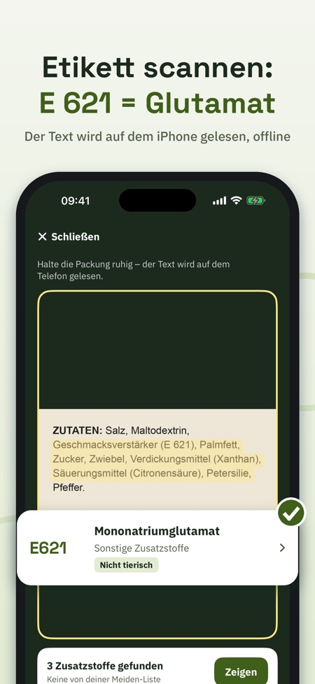
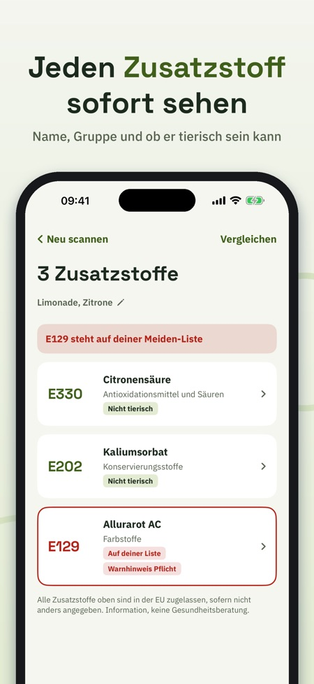
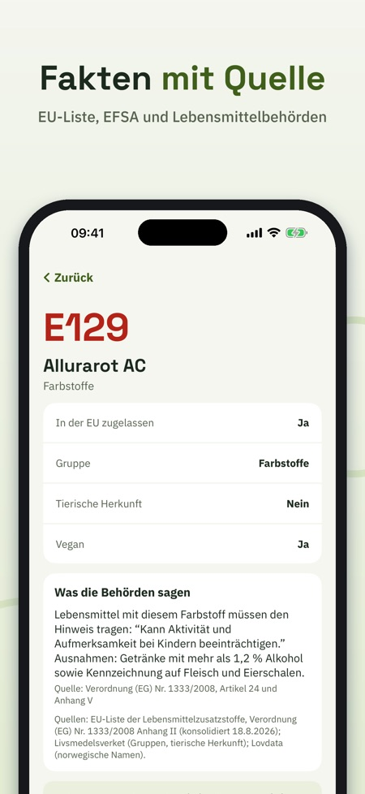

Zutaten scannen & verstehen. Kamera auf die Zutatenliste halten und sofort sehen, was jede E-Nummer ist. Alle 339 Zusatzstoffe der EU-Liste, mit Quellen. Funktioniert ohne Internet.



Was ist E 471? Und ist E 120 vegan? E-Check liest die Zutatenliste mit der Kamera und erklärt jeden Zusatzstoff – ruhig, kurz und mit Quelle.
Ohne Kauf: 5 Scans pro Tag, dazu Suche und Fakten zu allen Zusatzstoffen, Gruppen und Ratgeber. E-Check Full (Einmalkauf, kein Abo): unbegrenzte Scans, Meiden-Liste, Verlauf und Vergleich.
ETIKETT SCANNEN
Kamera auf die Zutaten halten. Der Text wird direkt auf deinem iPhone gelesen, auch ohne Internet. E-Check findet E-Nummern (E 330) und Namen (Citronensäure), auch auf Schwedisch, Norwegisch, Dänisch, Finnisch und Englisch. Es wird kein Bild gespeichert oder gesendet.
ALLE ZUSATZSTOFFE DER EU-LISTE
339 E-Nummern aus der EU-Verordnung über Lebensmittelzusatzstoffe, mit Namen in sechs Sprachen, Gruppe und ob der Stoff tierischen Ursprungs sein kann. Wo eine Behörde mehr sagt, steht es mit Quelle da: zum Beispiel der Warnhinweis für sechs Farbstoffe, dass Titandioxid (E 171) in Lebensmitteln nicht mehr erlaubt ist, und die Kennzeichnungsregeln für Süßungsmittel und Sulfite.
SUCHEN UND STÖBERN
Suche nach Nummer oder Name in jeder Sprache. Stöbere in sechs Gruppen: Farbstoffe, Konservierungsstoffe, Antioxidationsmittel und Säuren, Verdickungsmittel, Süßungsmittel und weitere.
DEINE MEIDEN-LISTE
Wähle die Zusatzstoffe, die du selbst meiden möchtest – aus eigenen Gründen. Schnellauswahl: Farbstoffe mit Warnhinweis, kann tierisch sein, Süßungsmittel, Sulfite, Nitrite. Jeder Scan markiert sie deutlich.
VERLAUF UND VERGLEICH
Gib dem Scan einen Namen und finde ihn wieder. Vergleiche zwei Etiketten nebeneinander.
WISSEN
Kurze Ratgeber: was das E bedeutet, wie ein Zusatzstoff zugelassen wird, wie man eine Zutatenliste liest, der Warnhinweis zu Farbstoffen und vegan oder nicht.
E-Check gibt Informationen, keine Gesundheitsberatung. In der EU zugelassen ist der Ausgangspunkt. Die App ist unabhängig und nicht mit der EU, der EFSA oder einer Lebensmittelbehörde verbunden.